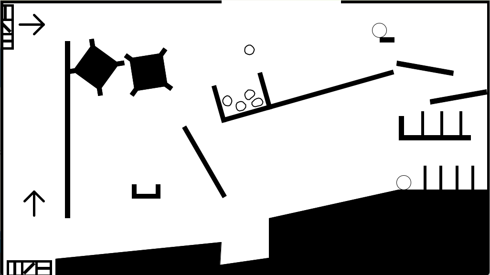
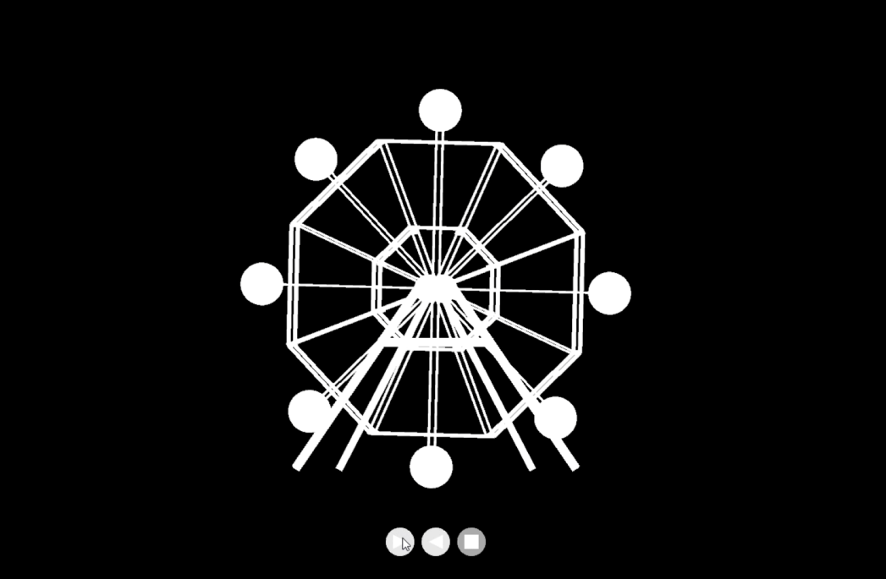
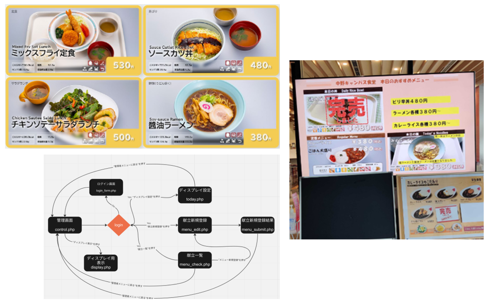
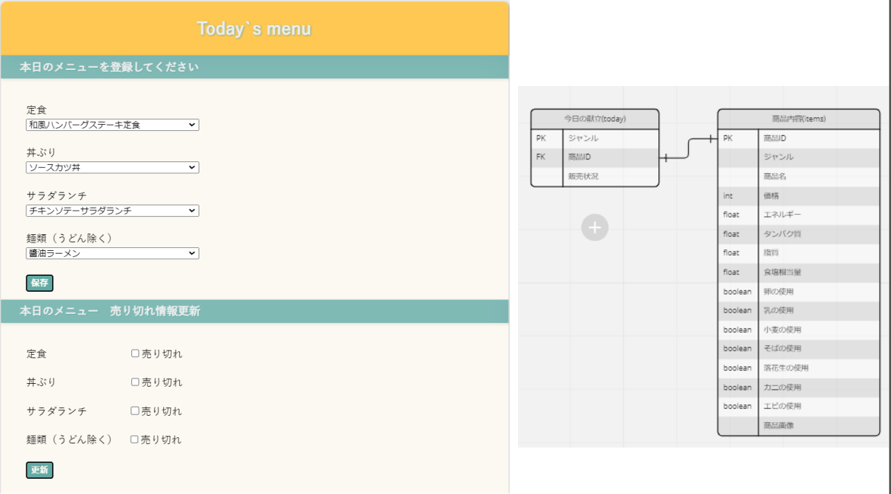

私は現在、明治大学総合数理学部先端メディアサイエンス学科に所属しているストラウド真綾と申します。大学では、最新のメディア技術やデータサイエンスを学びつつ、実践的なプロジェクトを通じてスキルを磨いています。 私のポートフォリオをご覧いただき、私の作品やスキルについて興味を持っていただければ幸いです。
作成したピタゴラ装置は、複数の仕掛けが連動して動く複雑なシステムです。スタート時には、柔らかい小さなボールが器にためられ、一定の重さに達すると器がひっくり返って道をふさぎます。この器はシーソーのように動き、固定にはFMouseJoint関数を使用しました。 次に、ドミノと坂を利用して時間を稼ぎ、二段階にわたって坂を下り、ドミノが倒れると別のボールがスタートします。さらに、下からの風でボールを上昇させる仕掛けや、ボールを右に移動させる風車のような装置も組み込まれています。最終的には、ゴールに到達した際に「ゴール」と表示される仕組みです。 全体のポイントとして、ひしゃくの形をした物体を再利用することで、一連の流れに統一感を持たせました。最初から最後までこのひしゃくが関与するデザインにこだわっています。
私が手掛けた観覧車の3DCGは、ただの視覚モデルにとどまらず、回転と逆回転の両方を実装しています。これにより、動きの自然さが際立ちます。さらに、ユーザーが様々な角度から観覧車を楽しめるように、カメラの移動機能も追加しました。このプロジェクトでは、3DCGモデリングのスキルはもちろん、複雑なアニメーション制御やインタラクティブな視点操作を実現するプログラミング技術に挑戦しました。
我々のチームは、明治大学中野キャンパスの学食前にあるモニターに表示されている本日のおすすめメニューを、ウェブ上に移行するシステムを開発しました。毎日手作業でパワーポイントを使って作成されているメニュー画像には、アレルギー物質の表示やエネルギー量までが詳細に記載されています。この労力を軽減するために、授業の課題の一環として取り組みました。 サービスは管理者が操作する部分と、モニターに表示するページの2つに分かれています。特徴として、一度登録したメニュー情報を保持し、ジャンルごとに選択肢を表示させ、選択するだけで簡単に設定できることが挙げられます。また、入力された情報を全てCSSで制御しているため、新規登録も容易です。 具体的な使用シーンとしては、保存された情報から当日のメニューを選択し、「本日のおすすめ」を登録し、ディスプレイに表示するという流れです。新しいメニューは写真と必要な情報を入力して登録することができます。 システム面ではSQLを使用してデータを管理し、メニュー登録にはFormを使用してデータを登録しました。また、PDOを用いてテーブルデータの変更や参照を行っています。これにより、現在学食で利用されているシステムよりも便利で、労力を軽減するという当初の目的を達成しました。 このプロジェクトを通じて、チームで協力して学食のデジタル化に挑戦し、効果的なシステムを構築できました。
担当箇所について
私が担当したのは、today.php の部分です。このページの目的は、本日のメニューを登録することです。ページ内には、本日のメニューをジャンルごとに設定する箇所と、販売状況を設定する箇所の2つがあります。 使用したSQLテーブルは today と items の2つです。まず、items テーブルからジャンルごとに（定食、丼ぶり、サラダランチ、麺類）メニューを選択肢として表示します。新しく登録したメニューもデータベースから選べるように SELECT 文を使用しています。 保存ボタンを押すと、today テーブルの内容が変更されます。isset 関数を使って、選択された項目を items テーブルから取り出し、その item_ID を today テーブルに格納します。これにより、メニューの変更が簡単に行えます。データベースの変更にはPDOを使用しました。 次に、売り切れ情報の更新部分は、フォームとラジオボタンで構成されています。各ボタンの初期状態は以下のように設定されます： ＜input type="checkbox" id="soldout1" name="soldout1" ＜?php if($today_data[0]['sales_status'] == "1") { echo "checked"; } ?＞ このコードは、today テーブルから事前に取り出した販売状況に基づいて、チェックボックスの初期状態を設定します。1ならチェックがつき、そうでない場合はチェックが外れます。更新ボタンを押すとページがリロードされ、isset 関数で変更があればデータがアップデートされます。
メールアドレス：mayast1030@icloud.com